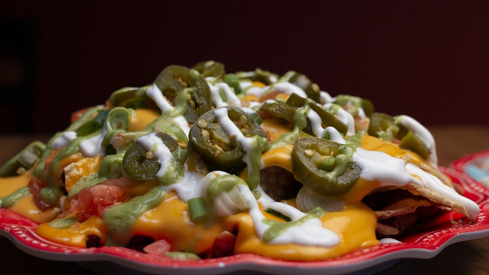

Jalapeno Nachos

Description
Experience the perfect fusion of spicy and savory flavors with this delightful Jalapeno Nachos recipe! Packed with crispy tortilla chips, tangy pickled jalapenos, and rich cheese, this dish is a must-have for any gathering or movie night. Here's how to make it:
Ingredients
- 12 oz. bag tortilla chips (organic are best)
- 8 oz. grated cheddar cheese
- 2 large jalapeno peppers (deseeded and minced)
- 1 cup pickled jalapenos
- Salt and pepper, to taste
- Optional toppings: sour cream, guacamole, salsa, green onions, cilantro
Steps
- Preheat your oven to 350°F. Line a baking sheet with parchment paper.
- Spread the tortilla chips in a single layer on the prepared baking sheet.
- Sprinkle the grated cheddar cheese evenly over the chips.
- Add the minced jalapenos and pickled jalapenos on top of the cheese.
- Season with salt and pepper to taste.
- Bake in the preheated oven for 10-15 minutes, or until the cheese is fully melted and slightly golden.
- Serve your Jalapeno Nachos hot with your choice of optional toppings, such as sour cream, guacamole, salsa, green onions, and cilantro.